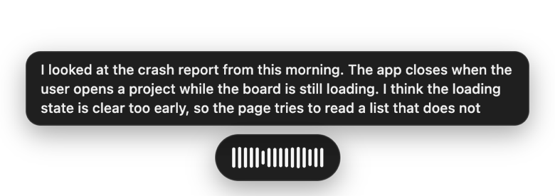
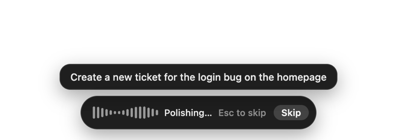
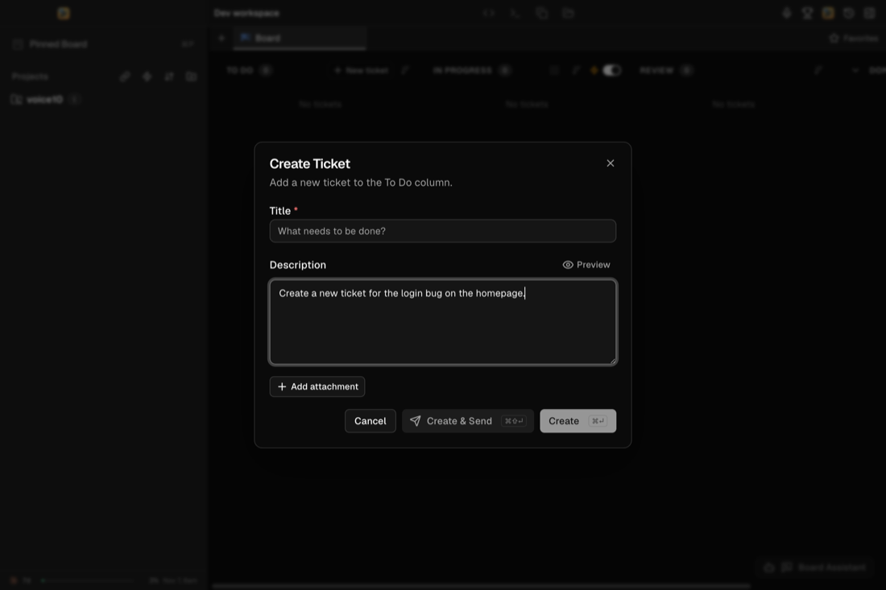
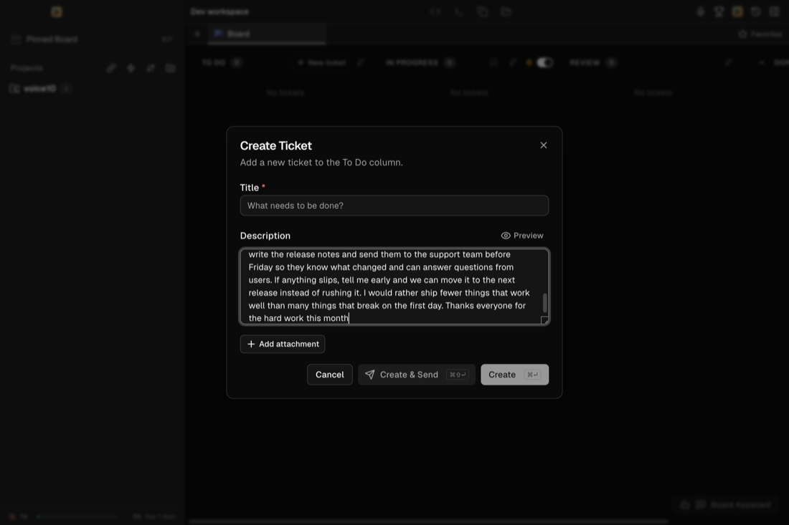
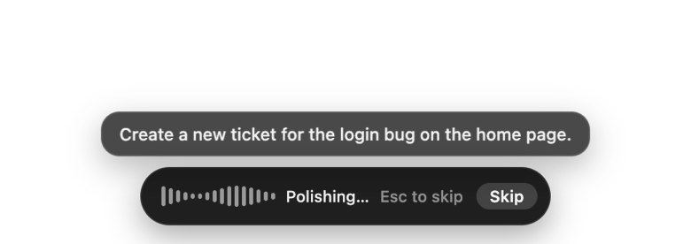
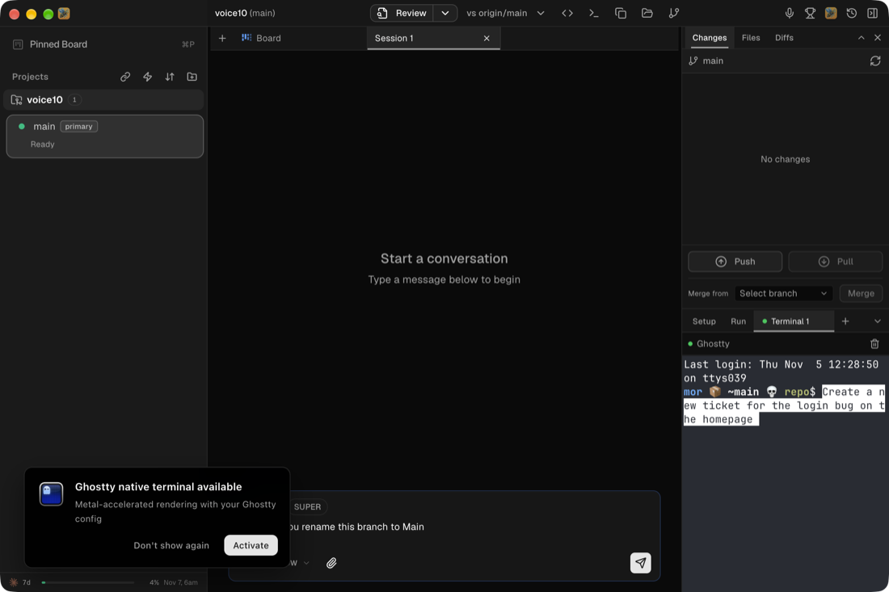

Voice streaming: verification report
VOICE-10 end-to-end check of live preview, instant transcript and skippable AI polishing in the running app.
Result
The feature works in the real app, but the project isn't signed off yet. It needs one check by you.
No scenario failed, and no code or ticket had to change. Every latency budget was met in the runs made, on small samples.
What's needed from you
- Scenario 11: run it by hand with a signed-in session (checklist), or accept it as a limitation.
- Scenario 14: the phone-to-desktop relay wasn't exercised. Test it with a paired phone, or accept that only the desktop transcribe call was checked.
- Reduced sample size: accept it, or re-run the timing when the Mac is free.
Setup
How the app was run and measured.
- App: this worktree's build, launched with the verify skill on CDP port 9223, with TEDOOO_CODE_DESKTOP_BASE_DIR set to an isolated temp dir and TEDOOO_CODE_VOICE_TEST_CLIPS=1. Page URL confirmed as this worktree's out/renderer/index.html. The test app didn't use the real ~/.hive/hive.db; it created and set up its own fresh database in the temp dir. Logs still go to the shared ~/.hive/logs, filtered here by process id.
- Models: Nemotron Speech Streaming 0.6B and Parakeet v2, linked from existing local copies. Warm unless stated.
- Timings: the app's own Dictation summary and Streaming session finished log lines. 37 dictations in one app process.
- Percentiles: nearest-rank, so every figure is a value that really occurred.
- Speech timing for preview lag: word timestamps from an offline Parakeet decode of each fixture, which is independent of the model being tested. A preview update's lag is its time from capture start minus the end time of the last spoken word it shows. Capture start comes slightly before the clip plays, so lag is overstated a little.
- Inputs: real Esc and ⌥Space (System Events) and real OS clicks (cliclick). Dictations started through the test bridge, which uses the same toggle as the hotkey.
- Focus retries: a run was retried only when another app held OS focus at delivery. Two scenario runs needed a second try (the 8 s sentence, scenario 4). The driving scripts were throwaway and aren't committed.
Scenarios
All 16, with the runs made and the evidence.
| # | Scenario | Result | Runs | Evidence |
|---|---|---|---|---|
| 1 | 3 s / 25 s / 60 s, cleanup off, into a ticket/composer field | Pass | 10 / 3 / 5 | Text landed in the Create Ticket description. Also the session composer (1 run). Max stop → final 95 / 47 / 54 ms; stop → delivered 97 / 48 / 55 ms. Three of the 60 s runs went to the clipboard because another app held focus; those count for stop → final only. |
| 2 | Cleanup on, no skip | Pass | 1 | HUD showed the text, "Polishing…" and Skip. aiStep:"cleaned", aiMs:3654. Polished text inserted, with the final period cleanup added. |
| 3 | Skip by click / Esc / hotkey | Pass | 1 / 2 / 1 | aiStep:"skipped" with skipInput click, escape, hotkey. skipToDeliveredMs:1 each. Shown text inserted, no notice or error. claude child seen during polishing, still there at 1 s, gone by 2.5 s after the skip. |
| 4 | Cleanup on, forced timeout | Pass | 3 | aiStep:"timed-out", aiMs:5122, log AI cleanup did not answer within 5s. Raw text inserted. The provider's sleep 120 was a child of the app during polishing and gone after the timeout. |
| 5 | Speech at sample 0 | Pass | 1 | 0 of 8 words different. First word "Hello" present. |
| 6 | 7 s pause mid-dictation | Pass | 1 | 0 of 13 words different. Words after the pause came through the stream (textSource:"streamed"). |
| 7 | Silence-only clip | Pass | 1 | Notice "Nothing heard", outcome:"discarded", reason:"nothing-heard". Field stayed empty. |
| 8 | Esc during recording | Pass | 1 | outcome:"cancelled", reason:"escape". Field empty. The next dictation delivered normally. |
| 9 | Engine killed mid-dictation | Pass | 1 | Engine sent SIGKILL 3 s into the 8 s clip. textSource:"fallback", fallbackReason:"engine-exited". 0 of 31 words different. Stop → final 626 ms. |
| 10 | Cold start then dictate | Pass | 1 | Engine killed while idle, engineLoaded:false confirmed before pressing start. Model reloaded during the dictation. All words present (only the homepage variant differs). |
| 11 | Agent panel target | Not run | 0 | The agent needs a signed-in Tedooo session in the shell build. You chose to check this one yourself. Unit tests in voice-controller.agent.test.ts pass, which isn't the same as seeing it work. |
| 12 | Terminal target (xterm, native Ghostty) | Pass | 1 / 1 | xterm: Delivered dictation {"target":"xterm"}, and a cat > file in the terminal wrote the exact text. Ghostty: {"target":"ghostty"}, text visible at the prompt (screenshot). |
| 13 | Parakeet v2 selected | Pass | 2 | No preview during recording, streamed:false, textSource:"whole-clip". Final text shown during polishing, Esc skip worked (skipToDeliveredMs:1). 0 of 12 words different. |
| 14 | Mobile path with the streaming model | Partial | 2 | voice.transcribeMobile with Nemotron selected returned correct text for two fixtures (615 ms, 271 ms), and history records the Nemotron model. The phone relay route wasn't exercised. |
| 15 | Click just above/beside the HUD | Pass | 1 | With the HUD up, real OS clicks at 4 transparent points (top edge, beside the panel, beside the pill, under the pill) all reached the main window. An earlier attempt at a point just above a growing panel missed; the likely cause is the panel growing over that point, and the retest used points the panel can't reach. |
| 16 | Engine busy time, 60 s fixture | Pass | 5 | Busy 7.7–8.4% of real time (busyMs 4637–5056 of 60304). CDP calls into the main window took at most 11 ms across 592 samples while recording. |
- A stray nge at the start of one ticket field. The session's final text was correct, and the app reported inserting 53 characters while the field held 57. The preview never contained it. The extra text was typing from outside the app that landed in the focused test field when the harness took focus. It's a test side effect, not a transcription error, and that run counts as correct.
- A 2–3 s frame gap during two 60 s runs. Measured on the second one: during the gap, timers fired about once a second, which matches Chromium's throttling of a covered window, while CDP calls into the same renderer stayed under 11 ms. So the most likely cause is another window covering the app, not a UI stall. The first gap wasn't timed this closely.
Timing
Measured against the latency budgets. With these sample sizes, p95 is the slowest or second-slowest run.
| Metric | Budget (p95) | Sample | n | p50 | p95 | Max | Result |
|---|---|---|---|---|---|---|---|
| Stop → final transcript | ≤ 150 ms | 3 s | 10 | 83 ms | 95 ms | 95 ms | Met |
| 25 s | 3 | 45 ms | 47 ms | 47 ms | Met | ||
| 60 s | 5 | 50 ms | 54 ms | 54 ms | Met | ||
| Stop → delivered, cleanup off | ≤ 250 ms | 3 s | 10 | 84 ms | 97 ms | 97 ms | Met |
| 25 s | 3 | 46 ms | 48 ms | 48 ms | Met | ||
| 60 s | 2 | 44 ms | 55 ms | 55 ms | Met | ||
| Skip → delivered | ≤ 100 ms | All skip inputs | 5 | 1 ms | 1 ms | 1 ms | Met |
| First preview words | ≤ 2 s after speech starts | All clips | 24 | – | – | 1,120 ms | Met |
| Preview lag, at each update | ≤ 1.5 s | 25 s, 3 runs | 135 | 484 ms | 757 ms | 933 ms | Met |
| 60 s, 3 runs | 297 | 387 ms | 751 ms | 943 ms | Met | ||
| Preview lag, just before the next update | ≤ 1.5 s | 25 s, 3 runs | – | – | 1,321 ms | 1,509 ms | Met |
| 60 s, 3 runs | – | – | 1,407 ms | 1,593 ms | Met | ||
| Engine busy time | ≤ 20% of real time | 25 s and 60 s | 8 | – | – | 8.4% | Met |
| Cold start | no audio lost | 3 s clip | 1 | – | – | – | Met |
- Stop → final doesn't grow with length. The 3 s runs were the slowest; their logs show 2 final decodes where the checked 60 s runs show 1.
- The 3 s group is every cleanup-off dictation under 5 s: ticket field, composer, terminals, the 2.9 s speech-at-start clip and the cold-start run.
- The two lag rows show the best and worst moment of each update cycle. The "just before" row is the stricter one: it's how far behind the text is right before new words appear. Its p95 meets the budget with little room, and single peaks reach 1.59 s.
- The 7 s pause clip is left out of the lag rows, because the budget covers continuous talking.
- Engine CPU over the 60 s clip was 26–27 s across all its threads, about 43% of one core or 3% of this machine. The budget is measured on busy time, as the live test does.
Transcript comparison
Word differences on every speech fixture, after lowercasing and removing punctuation. Parakeet is a comparison, not ground truth.
| Fixture | Words | Nemotron vs script | Parakeet v2 vs script | Nemotron vs Parakeet | Differences |
|---|---|---|---|---|---|
| short-command | 12 | 2 | 0 | 2 | Nemotron: "home page" → "homepage" |
| sentence | 31 | 0 | 0 | 0 | |
| paragraph | 101 | 1 | 1 | 0 | Both: "cleared" → "clear" |
| monologue | 207 | 0 | 1 | 1 | Parakeet: "three" → "3" |
| pause-mid | 13 | 0 | 0 | 0 | |
| speech-at-start | 8 | 0 | 0 | 0 | |
| Total | 372 | 3 (0.8%) | 2 (0.5%) | 3 (0.8%) |
- Nemotron's text comes from the running app. Parakeet's comes from an offline decode of the same fixtures with the same model files; in the app, Parakeet matched on short-command (scenario 13).
- silence isn't in the table, because it has no words. It was run in the app with Nemotron only (scenario 7).
- No notable errors. The one real word error, "clear" for "cleared", is in both models.
- Punctuation is ignored above but differs. Nemotron's text didn't end with a period on any fixture, and short-command and sentence had no punctuation at all. Longer clips have commas and periods inside the text. AI cleanup added the period in scenario 2; with cleanup off, dictations end unpunctuated.
- The fixtures are clean synthetic speech (macOS Samantha), so these rates say nothing about real voices or rooms.
Screenshots
Taken from the app's own windows, not the screen.






Known limitations
What this report doesn't prove, and behaviour you may want to accept or follow up.
Not covered
- Agent panel target (11): not exercised in the running app.
- Phone relay (14): only the desktop transcribeMobile call ran.
- Timing confidence: small samples on a Mac in use by other work, so the numbers can shift either way on a quiet machine. VOICE-04's open check (20 runs at each length) is still open, although no streamed dictation here took more than 100 ms from stop to final.
- Ghostty addon: copied from the installed 1.2.133 app (same Electron 41.10.7) and removed afterwards, not built from this tree.
- Full suite:
pnpm testandpnpm lintweren't run across the whole app. Earlier tickets recorded failures outside voice in this environment, and only a report changed here. Voice tests and voice lint were run. - Real microphone: every run used test clips, which is why the manual checklist below matters.
Behaviour to know about
- After a skip, the claude process lives for up to about 2.5 s. Nothing is inserted from it (seen in VOICE-08 too).
- The fallback isn't instant: 626 ms for a 9 s clip here. It's a failure path, so the budget doesn't apply.
- Stopping mid-word can still lose that word (VOICE-06, the 0.8 s tail was kept). Clips here stopped after speech ended, so this wasn't exercised.
- Text goes to the clipboard, not the field, when another app has focus at delivery. That's existing behaviour and it works, but it replaces whatever was on the clipboard.
Small follow-ups
- The verify skill says a forced timeout uses a provider whose command "just sleeps". Plain sleep fails, because the provider flags are appended to the command. sh -c 'sleep 120' works.
- Automated voice runs disturb a Mac that's in use: they take focus, can overwrite the clipboard, and can catch typing from outside the app. Plan them for an idle machine.
Manual checklist
For the owner: what automation can't cover, plus the two gaps from this run.
Gaps from this run
- Agent panel: signed in, open the agent panel and dictate. Expect the live preview, no "Polishing…", and the text delivered to the agent.
- Phone: with Nemotron selected on the desktop, dictate from the paired phone. Expect correct text.
Real-world conditions
- Real voice and accent: dictate naturally for 30 s or more. Check the preview keeps up and the text is usable.
- Noisy room: repeat with background talk or music. Check no phantom words appear in silence.
- Bluetooth headset mic: check the first words aren't lost while the headset switches profile.
- Speaking right after pressing the hotkey: start mid-breath and check the first word is there.
- Main window on a second display: check the HUD appears on that display. Move the window mid-dictation and check the HUD and final text still behave.
- Full-screen app: dictate with the app full screen, and over another full-screen app. Check the HUD shows and the text arrives.